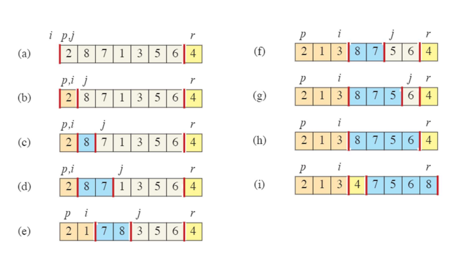
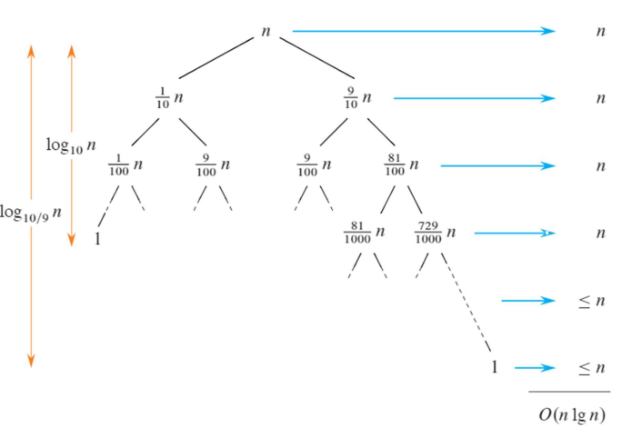
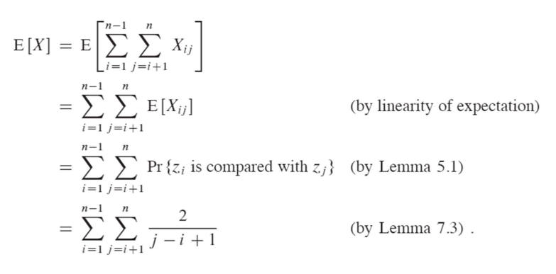
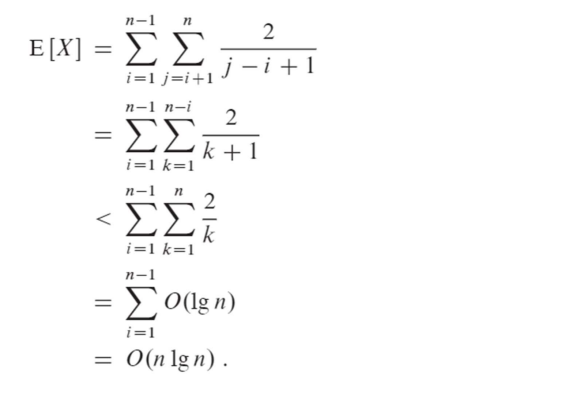

Worst-case : θ(n^2) /Average-case : θ(nlg n) / divide-and-conquer
Description of Quicksort
divide : A[p:r]을 A[p:q - 1] 과 A[q + 1:r]로 / 각각의 피봇-A[q]
Conquer : 각 배열에 quicksort를 재귀적으로 호출하여 정렬
Combine : 아무것도 안함
Partitioning the Array

If p <= k <= i, then A[k] <= x;
If i + 1 <= k <= j - 1, then A[k] > x;
If k = r, then A[k] = x
A[j] > x -> 루프 반복 / A[j] <= x -> A[i]와 A[j] swap and i += 1
Termination(종료)
- r - p번의 반복을 수행하므로 j = r이 되면 종료
- 3개의 집합으로 분할 됨 : x값 이상 / x값 이하/ x값(피봇)
- 마지막 (7-8)라인 swap 피봇 with A[i + 1]
Performance of Quicksort
Running Time of Quicksort
Quicksort의 실행시간은 각 부분이 균형있게 분할되는지에 따라 달라짐
- partitioning is balanced : O(nlg n)
- partition is unbalanced : O(n^2)
Quicksort: Worst-Case Partitioning
최악의 경우 : partitioning n - 1개의 요소 / 0개의 요소
T(n) = T(n - 1) + T(0) + Θ(n) => T(n) = Θ(n^2)
이미 정렬된 배열을 정렬 : Insertion sort = O(n) / Quicksort = O(n^2)
Quicksort: Best-case Partitioning
최고의 경우 : partitioning 약 n/2개의 요소 / 약 n/2개의 요소
T(n) = 2T(n/2) + Θ(n) => T(n) = Θ(nlg n)
Quicksort: Balanced Partitioning
평균 시간복잡도는 최악의 경우보다 최선의 경우에 훨씬 가까움
Let, T(n) = T(9n/10) + T(n/10) + Θ(n)

각 분할에서 recursion tree의 깊이가 Θ(lg n)일 떄, 각 레벨에서의 비용은 O(n)이므로 T(n) = O(nlg n)
Analysis of Quicksort
pivot이 무작위로 선택된다 가정하고 T(n)을 계산
T(n) = O(n + X) / X는 수행된 요소 비교의 수
- Quicksort의 실행시간은 Partition의 시간에 의해 결정됨
- Partition호출 -> 피벗 선택 (이 피벗 다시 호출x)
- 각의 QUICKSORT 호출이 PARTITION을 호출할 때, 두번 재귀호출 하므로 Quicksort자체의 최대 호출수 = 2n
- PARTITION 한번 호출 시간 : O(1) + 라인 3-6의 for loops횟수(비봇과 다른 원소를 비교)
- 따라서 모든 실행에서 for 루프에서 소비하는 총 시간은 X에 비례
- PARTITION이 최대로 호출될 경우와 for 루프 외부에서 사용되는 시간은 O(1)이며 각 호출에 소요되므로 for 루프에서 총 소요되는 시간은 O(n) / T(n) = O(n + X)
E[X]를 알기 위해알고리즘이 언제 두 요소를 비교하는지와 언제 비교하지 않는지를 파악해야 함
z1 < ... < zn에서 zi와 zj (i < j)가 비교되려면 반드시 둘중 하나가 피봇으로 선택되어야 함
i와 j가 비교될 확률 = 2/(j - i + 1)
- 피봇 x가 Zij사이에 속하는 요소들가 되기 전까지 zi와 zj가 비교될 수 있음
- Zij중 zi 또는 zj가 골라질 확률 = zi와 zj가 비교될 확률 (|Zij| = j - i + 1)
The expected running time of RANDOMIZED-QUICKSORT on an input of n distinct element is
O(nlg n)


Improving performance of quick sort
좋은 피봇 = 중앙값 피봇
Tail recursion optimization (꼬리 재귀 최적화)
: 각 분할 후, 더 작은 범위를 재귀 호출로 처리하고 더 큰 범위를 반복적으로 처리, 더 큰 범위에 대한 재귀 호출을 피할 수 있으며, 재귀의 깊이가 O(log n) 이하로 제한
Quick sort vs. Introspective sort
크기가 작으면 Quick sort 크면 다른 sort 사용